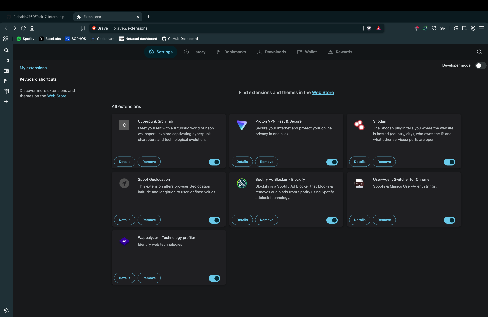
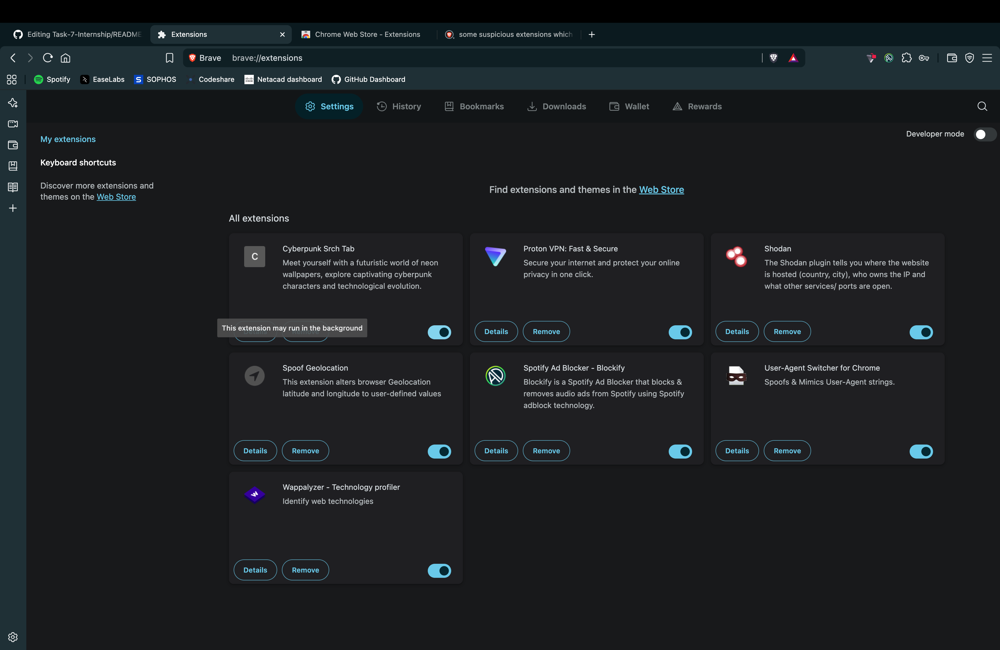
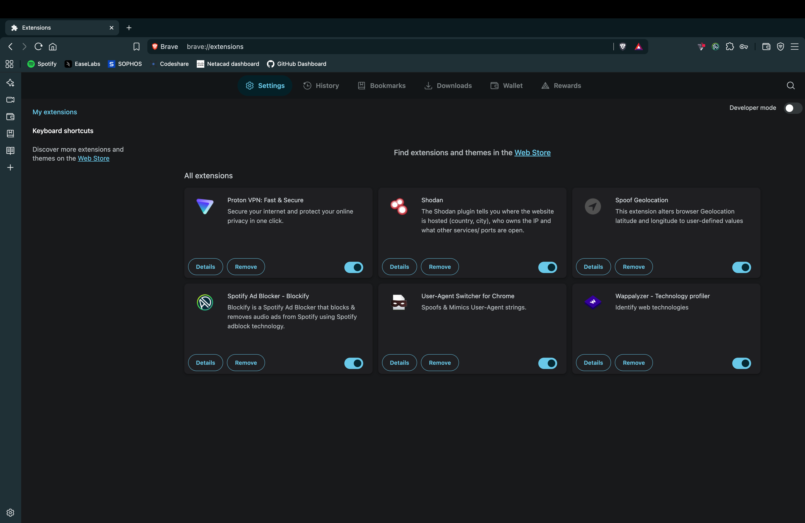
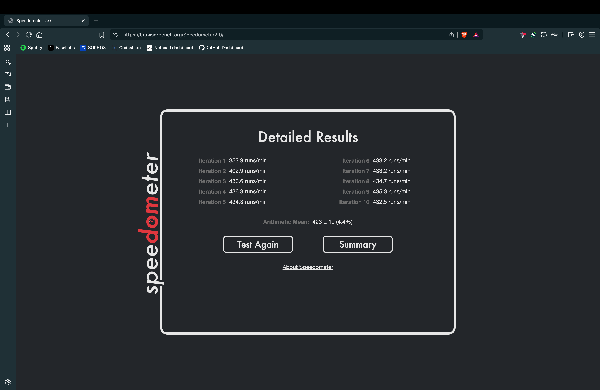

Objective
Learn to identify and remove suspicious or harmful browser extensions to improve browser security and performance.
Extensions Reviewed
| Extension Name | Status | Reason for Removal | Action Taken |
|---|---|---|---|
| Cyberpunk Srch Tab | Marked Suspicious | Attempts to change pages to a cyberpunk theme but does not work | Removed |
Process Followed
-
Opened Brave browser extensions manager via
brave://extensions/. -
Reviewed all installed extensions carefully.

-
Identified the "Cyberpunk Srch Tab" extension as suspicious due to non-functionality and potential risk.

-
Removed the suspicious extension from the browser.

-
Restarted the browser and checked for performance improvements.

-
Researched potential security risks caused by malicious browser extensions:
- Data Theft: Malicious extensions can steal sensitive information like passwords, cookies, browsing history, and autofill data.
- Geolocation Tracking: Extensions may monitor and track your physical location without your consent.
- IP Address Exposure: Extensions can expose your IP address to third parties, compromising anonymity.
- CSS Manipulation: Harmful extensions might inject or alter CSS on web pages to spoof content or hide malicious activities.
Conclusion
Regularly reviewing and removing suspicious or unused browser extensions enhances security by minimizing potential attack vectors and improving browser performance.